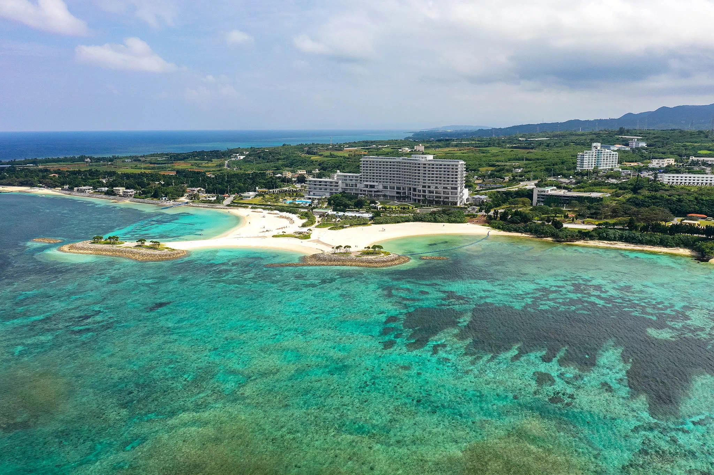

Strandurlaub in Okinawa
8. Juli 2018
Nach einer aufregenden Zeit in Tokyo bin ich nun in Okinawa angekommen. Diese wunderschöne Inselgruppe im Süden Japans ist bekannt für ihre traumhaften Strände und das kristallklare Wasser. Schon bei der Ankunft spürt man die entspannte Atmosphäre und die herzliche Gastfreundschaft der Einheimischen.
Mein erster Stopp war der berühmte Strand von Naha. Der weiße Sand und das türkisfarbene Wasser sind einfach atemberaubend. Ich habe den ganzen Tag damit verbracht, im Meer zu schwimmen und die Sonne zu genießen. Es war der perfekte Ort, um die Seele baumeln zu lassen und den Alltagsstress zu vergessen.
Am nächsten Tag habe ich einen Ausflug zum Okinawa Churaumi Aquarium gemacht. Dieses beeindruckende Aquarium beherbergt eine Vielzahl von Meereslebewesen, darunter riesige Walhaie und Mantas. Besonders beeindruckend war der riesige Kuroshio-Tank, in dem man die majestätischen Tiere aus nächster Nähe beobachten kann.
Ein weiteres Highlight meiner Reise war der Besuch des Shurijo-Schlosses. Diese historische Stätte bietet einen faszinierenden Einblick in die Geschichte und Kultur der Ryukyu-Inseln. Die Architektur des Schlosses und die wunderschön angelegten Gärten sind absolut sehenswert.
Okinawa hat so viel zu bieten und ich freue mich darauf, in den nächsten Tagen noch mehr von dieser paradiesischen Insel zu entdecken. Von den traditionellen Märkten über die köstliche lokale Küche bis hin zu den versteckten Buchten und Stränden – es gibt immer etwas Neues zu erleben.
Hinweis: Dieser Text wurde mit Hilfe von GitHub Copilot (GPT 4o) generiert.